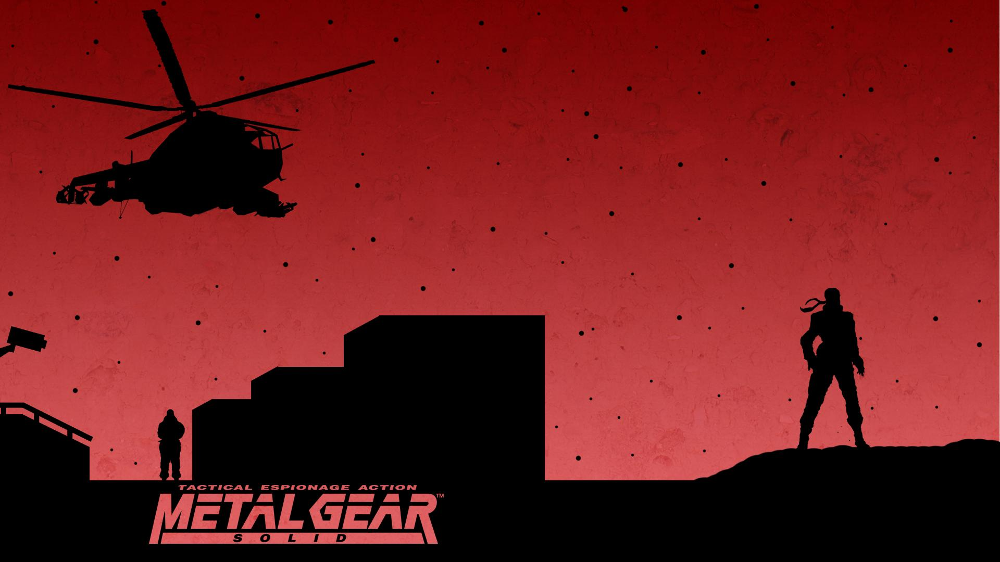

Первая часть в серии Metal Gear Solid, которая продолжает путешествие Solid Snake'a после событий в двух предыдущих частях.Игра косвенно доступна на ПК. Metal Gear Solid можно купить в GOG, но там обычная версия с PlayStation 1, но через небольшие костыли можно сыграть в улучшенную версию игры.
У оригинальной MGS есть брат близнец MGS: The Twin Snakes - это ремейк игры для приставки GameCube, который имел улучшенную графику и полноценные катсцены (которые в некоторых моментах выглядят комичными). В интернете продолжаются споры на тему того, можно ли считать данный ремейк каноном (все по тем же причинам, что и с Portable Ops).
Если для Вас важен канон, то стоит сыграть в обычную версию Metal Gear Solid, которая доступна в GOG.
Если для Вас важно более удобное управление, катсцены и, что главное, текстуры в 4K разрешении, то тогда потребуется сыграть в MGS: Twin Snakes на эмуляторе от GameCube. (Эмулятор позволяет без проблем апскейлить все текстуры в игре и без багов, все играется гладко)
Для игры на ПК Вам потребуется:
Обязательно скачайте 2 диска для версии на GameCube. Их потребуется заменить после прохождения одного из боссов. Гайд по смене дисков на эмуляторов - тут